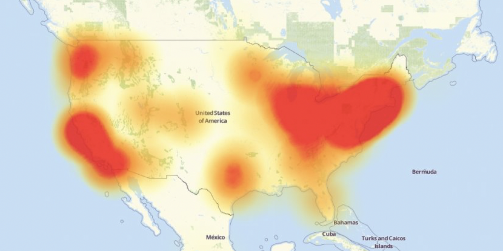

Browser Pop Quiz
Last version check — September 28, 2016:
53
49
14931
10
Browser Pop Quiz
As of October 26, 2016:
53
54
49
49.0.2
14931
14936
10
10.0.1
Chrome 54
Mostly the same as last month:
-
BroadcastChannel API: Message Bus for Tabs
// Connect to the channel named "my_bus".
const channel = new BroadcastChannel('my_bus');
// Send a message on "my_bus".
channel.postMessage('This is a test message.');
// Listen for messages on "my_bus".
channel.onmessage = function(e) {
console.log('Received', e.data);
};
// Close the channel when you're done.
channel.close();
Chrome 54 continued...
- CSS text-size-adjust: disable text autosizing on mobile
- Passive Touch Event Listeners During Fling Intervention
- imageSmoothingQuality attribute for CanvasRenderingContext2D (quality/performance tradeoff control)
- Performance/Security Improvements
Firefox 49.0.2
- Minor Updates
- Firefox 50 slated for November release
Edge 14936
- Nothing Notable
Safari 10.0.1
- Nothing Notable
Notable Releases
- Node 6.9.X (Boron), Promoted to LTS
- Ember 2.8-LTS, 2.9, 2.10 Beta
- YouTube being rebuilt with web components & Polymer
- PubSubHubbub => PubSub => W3C Adoption
DynDNS DDOS Attack
- Massive CyberAttack
- Outages: Github, Twitter, Spotify, Etsy, Amazon

Mozilla Ditching StartSSL/StartCom/WoSign
- Unacceptable WoSign breaches (Chinese Root CA)
- Mozilla lost trust in WoSign
- Mozilla lost trust in StartSSL/StartCom by association
- No green bar + warning
StartSSL/StartCom provides some of the cheapest SSL certificates, used for many websites and apps (popular amongst Electron developers).
JS Foundation
- https://js.foundation
- Open, Accesible, & Sustainable Standards
- Drive broad adoption and ongoing development of key JS solutions.
- Handful of Projects
- Platinum Sponsors: IBM, Samsung.
The State of JS (Sacha Greif)
- http://stateofjs.com/2016
- Lots of interest in React & Vue (usage = so-so)
- Coffeescript on it's way out.
- Still very murky with testing, Redux, & GraphQL (and how they play with API's)
Yarn: An npm alternative.

- Prevent version mismatch (yarn.lock)
- Speed: npm = 9s, yarn = 1.37s (installing express)
- 14K Github Stars in 2 days
- NPM, Inc encouraging it's development
- Has limitations with version managers
Goodbye, Google Hangouts... sorta.
- Yahoo Article
- Mobile developers no longer need to bundle Hangouts
- Not preinstalled on Android anymore (but still available)
Upcoming Events
- Chrome Dev Summit Nov 10-11 (San Francisco)
- Node Interactive: Nov 29-Dec 2 (JW Marriott)
- Clojure Conf Dec 1-3 ($50 Off)
- DockerCon: April 17-20 (2017)
Thanks!